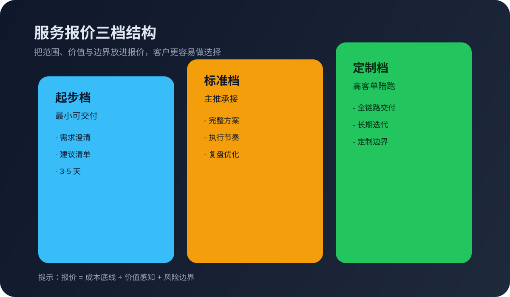

这篇先解决什么
先解决“客户总说太贵”“报价发完就没下文”“服务范围讲不清”的常见问题，再谈复杂的定价模型。对一人公司来说，先把报价变成成交前的承接动作，比先追求复杂模板更重要。
很多人搜“服务报价怎么做”“项目报价怎么写”，真实卡点往往不是算成本，而是：客户问了价却没继续、报价一发就被比价、自己也讲不清为什么值这个价。这篇给一人公司和轻创业者一个可执行的 6 步报价路线，先把报价做成承接咨询的工具，而不是一张孤零零的数字表。

先解决“客户总说太贵”“报价发完就没下文”“服务范围讲不清”的常见问题，再谈复杂的定价模型。对一人公司来说，先把报价变成成交前的承接动作，比先追求复杂模板更重要。
Shopify 在定价策略里强调，定价不仅是算成本，还要考虑市场定位、用户价值感知与竞争环境。HubSpot 也提到，价格是客户最先感知的信号之一，会直接影响他们对服务质量的判断。MBA智库的定价策略总结指出，价格是营销组合中唯一直接产生收入的因素，必须同时考虑目标、成本与竞争反应。对一人公司而言，这意味着报价不是纯数学题，而是“价值沟通 + 风险控制 + 下一步动作”的组合设计。
这 6 步的核心不是把价格算到极致，而是让报价本身变成“承接咨询 → 推进成交”的工具。
报价目标决定了你该选什么定价方式。是为了快速拿下第一个标杆客户？还是要稳定利润？还是要筛掉不合适的咨询？HubSpot 提醒，定价是业务目标的杠杆，目标不同，价格和策略就不同。对一人公司来说，先定“拿下谁、排除谁”，比“算到几块钱”更重要。
成本不止是时间和工具，还包括机会成本：你为了做这个项目，放弃了什么更高价值的客户？Shopify 的成本加成策略提醒你，定价先把底线算清楚，否则再大的单也只是忙一场。把“最小不亏点”写出来，你才知道哪怕降价也有边界。
MBA智库的定价决策强调要在目标、成本和竞争间找到平衡。你可以选一个主逻辑：成本加成、价值定价、市场对标，三者不要混成一团。对一人公司来说，建议以价值定价为主、成本为底线、市场对标为修正，既不亏本，也不被动陷入价格战。
单一报价很容易把客户推向“比价”。三档结构更适合引导选择：起步档解决最核心问题，标准档覆盖你最想交付的价值，定制档承接更复杂的需求。这样客户会更容易理解“为什么更高档更贵”，而不是只盯着数字。
报价单里最值钱的不是价格，而是交付清单。写清楚“交付什么 / 不交付什么 / 需要客户配合什么”，报价才能减少反复沟通。对一人公司来说，这一步还能有效减少后期返工，把“隐形成本”变成“可控边界”。
报价不是结束，而是下一步的开始。建议每次报价后都配一个明确动作：安排 30 分钟澄清会、补充需求清单、看下一篇案例或服务说明页。这样客户知道要做什么，你也能自然把咨询推进到下一步。
客户不知道你能交付什么，就只能比较价格。
客户没有选择空间，要么接受，要么流失。
后期容易出现追加需求、反复沟通和成本失控。
没有下一步安排，咨询容易自然流失。
不看同类服务价格区间，会导致报价缺乏信心。
客户以为“全包”，你以为“只做到这里”，后续最容易扯皮。
不一定，但三档最适合一人公司承接咨询：起步档降低进入门槛，标准档作为主推，定制档承接复杂需求。这样客户更容易做选择，而不是只和你比最低价。
先补 3 个信息：需求范围、交付目标、时间要求。没有这 3 个信息直接报价，很容易变成错误比价。你可以先给价格区间，再说明正式报价需要哪些前置信息。
可以，但至少要把交付清单、周期、边界和下一步动作写清楚。哪怕是一页简版报价，也比只发一个数字更容易推进合作。
报价页更聚焦价格结构、范围和交付边界；服务提案更聚焦这次准备怎么做、分几步推进、为什么这样安排。报价页回答值多少钱，提案回答准备怎么做。
先把需求收集做清楚，报价才不会反复来回。
如果你已经知道怎么报价，下一步就该把方案结构讲清楚。
如果你想把报价、提案和客户承接接成一条线，可以直接沟通现状。
如果你是一人公司，正卡在报价、咨询承接或交付边界上，可以把现状发来，我们先帮你拆成最小可执行清单。